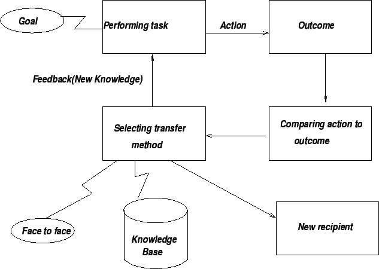

Next: Transfer Strategies
Up: Methods of Knowledge Transfer
Previous: Methods of Knowledge Transfer
Contents
- Routine Problems
- Non-routine Problems
- Complex and critical Problems
- Basic Problems
- Problems with combination of constraints.
Figure 8.3:
Conversion of experience to knowledge
|

|
Knowledge Management Systems
2004-11-01